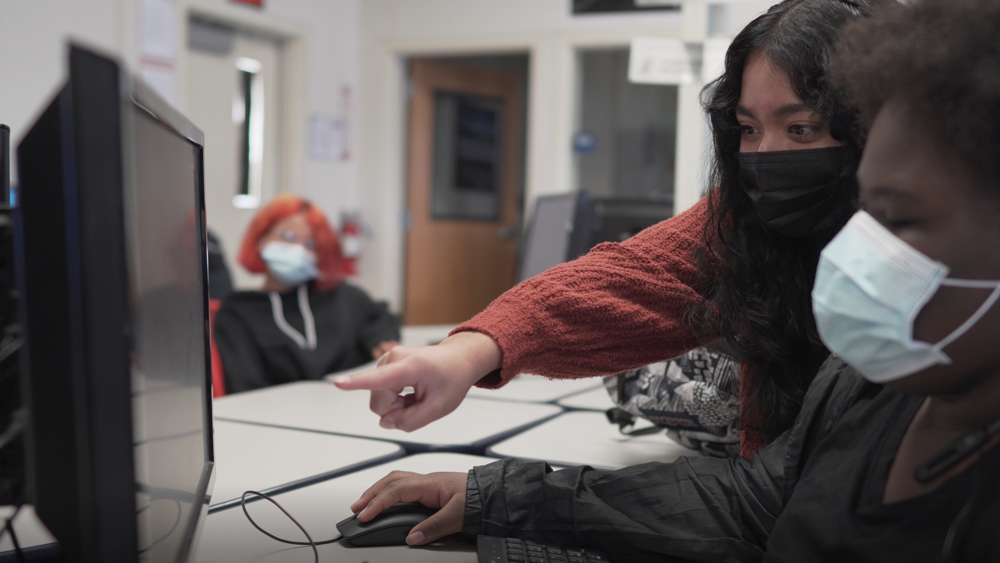
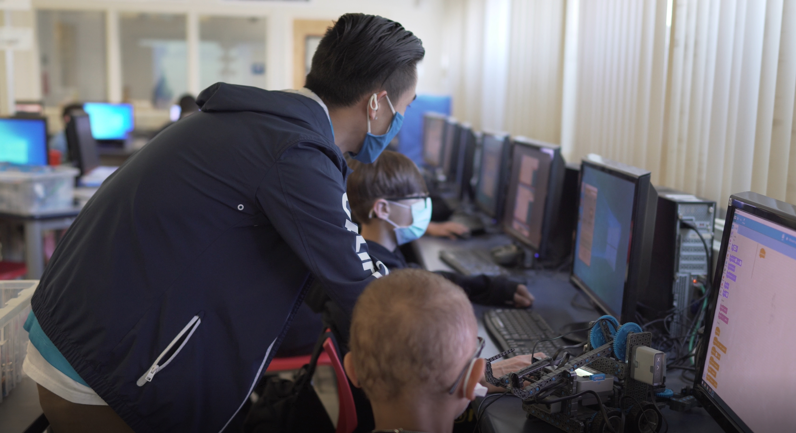
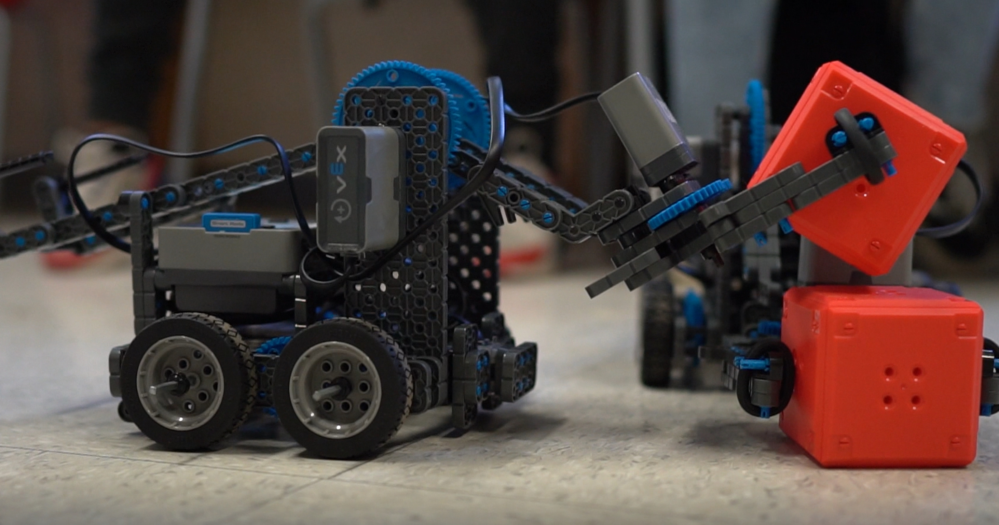

Going beyond the classroom with NexTech Robotics
UC Merced engineering students have created a program to inspire middle school students about STEM. The program brings an innovative and fun tech curriculum in order to introduce programming, engineering problem-solving and team science, along with helping them develop a sense of identity in STEM. UC Merced students take on the role of NexTech educators and guide the middle school students through building several versions of robots and puzzles. Students can see themselves succeeding in technology after exploring NexTech Robotics.
Robotics in middle school opens STEM pathways to exciting careers! (Illustration:M. Martinez)
Bring NexTech to Your School
Are you interested in learning more about technology? Join our email group so that we can bring NexTech Robotics to your school or share when we’re hosting tech events in the San Joaquin Valley.
Host a NexTech course at your school: email CITRIS at citris@ucmerced.edu

Support NexTech
Donate to expand NexTech to more San Joaquin Valley students:Please consider sponsoring another location. We are limited by Vex IQ Kits and educator interns employees.

Lina B-Hernandez helps students write the code that controls the robots. (Photo by Crystal Rajan)
What is NexTech
CITRIS @ UC Merced’s innovative computer science and robotics program has been serving San Joaquin Valley middle school students since 2015. Developed by a UC Merced undergraduate student, NexTech Robotics engages every kind of computer scientist, from logic-based programming to wireless control. Students work independently and in teams to develop computational thinking. Through in-class and after-school sessions NexTech students practice scratch and block coding, learn about sensors, run competitive courses, and solve problems.
CITRIS NexTech Education interns—undergraduate students majoring in Computer Science and Engineering and Mechanical Engineering—serve as near-peers who bring an element of fun and illustrate a pathway to success in higher education. The interns over time have added units on drones, CAD and unmanned aerial systems (UASs); Python and HTML code to make websites; and general engineering concepts.
Nextech Intern Peter Sou assists students as they compete as teams in programming challenges. (Photo by Crystal Rajan)
California needs teachers, especially in STEM fields. UC Merced’s CalTeach program trains teachers in natural sciences and math, and the UCsystem contributes over 5% of credentialed teachers to the profession each year. But many undergraduate students don’t realize their potential in education. NexTech affords multiple students an opportunity to try teaching with real students. Many of them continue. By working in pairs, they learn pedagogical tools, classroom management, and how to create engaging curriculum. We hireNexTecheducators who can inspire students to see themselves in computer science, STEM and higher education.
CITRIS offers NexTech in several formats with plans to expand outreach. NexTech in the past served Tenaya, Cruickshank and Hoover Middle Schools through in-class and after-school programs lasting 6-10 weeks. When the COVID-19 shelter-in-place took effect, NexTech went online using web-based emulators instead of the physical robots. We plan to expand to serve online and weekends as well as go beyond Merced-city schools by adding new locations when possible.
Why middle school robotics
Robots are fun, creative and present multi-dimensional problems that translate into engineering, math and computer science skills. They’re also a gateway to engage many student interestsand skills.
Middle school students build robots to solve challenges such as stacking blocks. (Photo by Crystal Rajan)
A leading issue in the San Joaquin valley is the ability for low-income students to explore STEM (science, technology, engineering and mathematics) beyond the typical classroom setting. This program was designed to change how students see themselves in STEM and how they think about problems, logic, and computers.The region’s population is also considered historically underrepresented in STEM education and technology careers. By interveningin middle school--when young women tend toopt-out of STEM and when students are developing their occupational identity—NexTechenables mentoring from near-peers, develops teamwork, and creates lasting connections among students who might otherwise not have classes together.
CITRIS at UC Merced encouragesunderrepresented studentstofind their path in STEM and pursue higher education. NexTech is onesteptoward access and achievement in STEM,sharing the excitement of two UC Merced students and the NexTech Robotics fun in San Joaquin Valley middle schools.

Paul Conanan shares a passion for teaching, robotics, and engineering with middle school students. (Photo by Crystal Rajan)